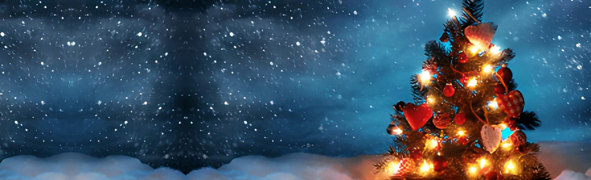

¡¡Feliz Navidad!!

¡¡Feliz Navidad!!
En el siglo I a.C., el emperador romano César Augusto ordenó un censo de toda la población del Imperio Romano.
José y María, una pareja de Nazaret, viajaron a Belén para registrarse, ya que José era descendiente del rey David
y Belén era la ciudad de David. Cuando llegaron a Belén, no encontraron alojamiento disponible, y María dio a luz a
Jesús en un establo. Según la tradición cristiana, en esa noche nació el Niño Jesús, quien sería reconocido como el Mesías.
Esa misma noche, un grupo de pastores que cuidaban sus rebaños en los campos cercanos recibieron la visita de un ángel
que les anunció el nacimiento de Jesús y les indicó dónde encontrarlo. Los pastores fueron a Belén y encontraron al
niño en el pesebre, como les había dicho el ángel.Después del nacimiento de Jesús, llegaron también los Reyes Magos, guiados por una
estrella, para adorar al recién nacido. Los Magos ofrecieron regalos de oro, incienso y mirra.
La Navidad se celebra el 25 de diciembre en muchas partes del mundo, aunque la fecha exacta del nacimiento de
Jesús no está registrada en los evangelios.
Esta fecha fue elegida por la Iglesia para coincidir con festividades paganas y así facilitar la transición de la celebración hacia el cristianismo.
La Navidad se ha convertido en una festividad importante en la cultura occidental, y se celebra con intercambio de regalos,
decoraciones festivas, reuniones familiares y actos de caridad.Es importante recordar que la celebración de la Navidad puede tener
diferentes significados y rituales en diversas culturas y religiones, y la historia que te he proporcionado es la versión cristiana
tradicional.
Las tradiciones navideñas varían de un país a otro y de una cultura a otra, pero aquí te proporciono una visión general de algunas de las tradiciones
más comunes asociadas con la Navidad:
1. Árbol de Navidad: Decorar un árbol con luces y adornos es una de las tradiciones más icónicas de la Navidad. En muchos lugares, las familias se
reúnen para adornar el árbol juntas.
2. Adventskranz (corona de Adviento): Esta tradición es especialmente popular en países como Alemania y Austria. Consiste en una corona de ramas verdes
con cuatro velas encendidas cada domingo de Adviento hasta Navidad.
3. Calendario de Adviento: Muchas personas tienen un calendario especial con ventanas o bolsillos que se abren cada día en diciembre, revelando una
pequeña sorpresa o golosina.
4.Belén o pesebre: Representa el nacimiento de Jesús y suele incluir figuras de María, José, el Niño Jesús, los ángeles, los pastores y los Reyes Magos.
5. Velas de Navidad: Encender velas durante la temporada navideña es una tradición común en muchos hogares. Además de las velas del árbol y el Adviento,
algunas personas encienden velas decorativas en sus ventanas.
6. Cena de Nochebuena: En muchas culturas, la cena de Nochebuena es una celebración importante que reúne a familiares y amigos alrededor de una comida
festiva. Los platos y las tradiciones culinarias varían según la región.
7. Regalos y Papá Noel: En muchos países, los niños reciben regalos de Papá Noel (Santa Claus) durante la noche del 24 de diciembre. En algunos lugares,
como en España y otros países hispanohablantes, los regalos se entregan en la noche del 5 de enero por los Reyes Magos.
8. Cantos de villancicos: Muchas comunidades celebran la Navidad cantando villancicos, ya sea en iglesias, en grupos o de puerta en puerta.
9. Misa del Gallo: La Misa del Gallo es una celebración religiosa que se lleva a cabo en la noche del 24 de diciembre para conmemorar el nacimiento de
Jesús.
10. Actos de caridad: La Navidad es una época de generosidad y muchas personas participan en actividades benéficas, como donar alimentos, juguetes o
tiempo para ayudar a quienes lo necesitan.
Estas son solo algunas de las muchas tradiciones navideñas que existen en el mundo. Cada cultura y familia tiene sus propias formas de celebrar esta
festividad, lo que hace que la Navidad sea una época especial y significativa para muchas personas en todo el mundo.
Viajar durante la temporada navideña puede ser una experiencia maravillosa para experimentar diferentes culturas y tradiciones festivas. Aquí te dejo
algunas sugerencias de destinos que suelen ser populares para celebrar la Navidad:
1. Nueva York, Estados Unidos: La ciudad de Nueva York es famosa por sus espectaculares decoraciones navideñas, como el árbol del Rockefeller
Center y las luces de Times Square. Además, puedes disfrutar de patinaje sobre hielo en el Central Park o en el Bryant Park Winter Village.
2. Praga, República Checa: Praga se transforma en un cuento de hadas durante la Navidad, con mercados navideños en la Plaza de la Ciudad Vieja
y el Castillo de Praga iluminado. El ambiente es mágico y las calles empedradas añaden un encanto adicional.
3. Rovaniemi, Finlandia: Rovaniemi es conocida como la ciudad de Santa Claus y es el hogar oficial de Papá Noel. Puedes visitar la Aldea de
Santa Claus, conocer a los renos y experimentar la auténtica magia de la Navidad en el Círculo Polar Ártico.
4. Viena, Austria: Viena es conocida por sus impresionantes mercados navideños y su ambiente festivo. Puedes disfrutar de delicias culinarias
como el Glühwein (vino caliente) y explorar la elegante arquitectura de la ciudad decorada con luces festivas.
5. Estrasburgo, Francia: Estrasburgo se autodenomina la "Capital de Navidad" y es famosa por su mercado navideño, uno de los más antiguos y
grandes de Europa. Puedes pasear por las encantadoras calles adoquinadas y disfrutar de la atmósfera festiva.
6. Colmar, Francia: Esta pintoresca ciudad francesa se ilumina durante la Navidad con mercados navideños llenos de encanto y arquitectura
de estilo alsaciano. Es un destino ideal para aquellos que buscan una experiencia navideña auténtica.
7. Quebec, Canadá: La ciudad vieja de Quebec se transforma en un escenario de cuento de hadas durante la Navidad. Las calles adoquinadas,
las luces y los mercados navideños crean una atmósfera encantadora.
8. Tallin, Estonia: El casco antiguo de Tallin, declarado Patrimonio de la Humanidad por la UNESCO, se viste de gala durante la Navidad. Los
mercados navideños y las luces crean un ambiente acogedor y festivo.
Contactame a través de las redes sociales